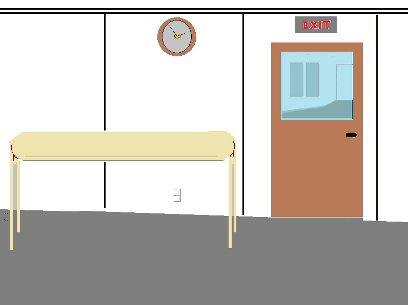
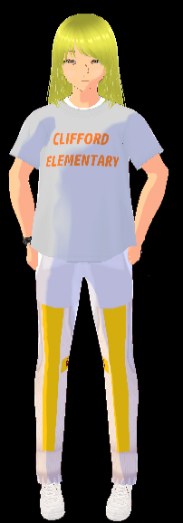
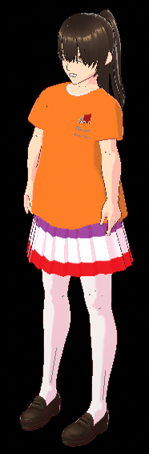

If you text or leave a message include all the details like name of patient, any supplies needed, room number, allergies. If you are in a big rush you can also try Door Dash or order from the hospital cafeteria over the phone or gift shop. -Lexxi


To sign up to be a volunteer in your local community and add your name and town to the list, click the button. This is a loose co-op, not a meeting group. We cannot guarantee the work of any volunteer so use your own good judgement when contacting volunteers. -Rhonda